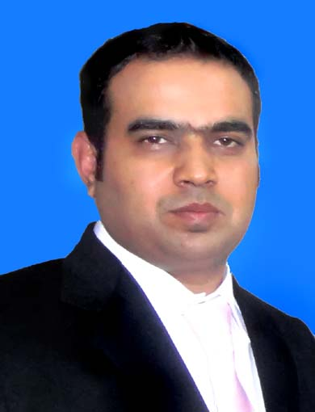

Adnan Qureshi IT/Coordination Manager 
adnansq19@hotmail.com 03214423774
House 129 St 2 Abshar Colony Warsak Road Peshawar Pakistani
Linkdin Profile.
Profile
I am presently employed as an IT/Coordination Manager at Aziz Group of Industries in Peshawar, bringing with me 20 years of experience in IT Administration, SAP B1 Administration, Property Management, and HR Management, gained across a range of sectors, including multinational corporations, industrial, banking, and real estate. Additionally, I hold certifications in MCITP and Apple, demonstrating my expertise in these domains.
Education
03/2007 – 03/2009 MCS CBA University Lahore
Experience
Aziz Group of IndustriesSince November 2010, I have been serving as the IT/Coordination Manager for Aziz Group of Industries, which operates seven factories across three locations (3 in Peshawar, 2 in Gaddon 1in Islamabad, and 1 in Shiekhupura). As part of my role, I am responsible for various coordination and IT-related activities, including:
CoordinationProcuring land for the construction of the "AJ Towers" mixed-use building project. Handling documentation and property transfer from relevant authorities such as CDA, DHA, and PDA. Obtaining project approvals from authorities such as CDA and MCI. Developing and executing marketing plans for the AJ Towers project, including brochures, billboards, floor plans, agreements, and interactive walk-throughs. Obtaining approval for trust registration from the Registry office. Securing 7 PL licenses from the Mineral Department of KPK for the "Limestone" cement factory. Successfully conducting social audits twice for the group's spinning mill, with a rating of A. Working officially with the Korean Embassy for our CEO, who serves as the Honorary Counsel General of KPK for South Korea. Overseeing the technology aspects of the group's 4 MW solar park located in Gadoon.
ITAdministering the SAP B1 system. Designing GPON system for ( 77 Apartments, 66 Shops, 100 Offices ) Managing WAN links between the factories and the head office, including P2P and VLAN configurations. Maintaining the LAN and network of approximately 200 computers. Managing a team of seven employees working across different factories. Procuring IT equipment. Implementing various technologies, such as MDaemon and GFI email content security, Squid Server, Terminal Servers, Wingate, Polycom video conferencing, IP cameras, and CCTV with DVR and NVR. Installing and implementing the Hand Punch/Face Recognition system for almost 1800 employees in a waving factory for attendance and salary disbursement. During my tenure, I played a pivotal role in the successful implementation of SAP B1 in the group's spinning unit. I acted as the project coordinator, conducting market research and analysis to select SAP B1 as the ERP system, and then comparing various implementation partners before finalizing Abacus Consulting, who is a Gold Partner for SAP B1 implementation in Pakistan with mixed experience of local and international projects. I was closely involved in the project from resource allocation, hardware finalization, business process mapping to go-live system with the implementing partner. Today, I continue to administer SAP B1, providing day-to-day support to users and addressing any issues that arise.
Dubai Islamic Bank System Engneer 10/2009 to 10/2020Being the System Support Engineer at DIB main branch Peshawar Cantt, I am responsible for more then 25 Systems Hardware and Software troubleshooting including Printers scanner and network equipments. I am also looking after the Avaya IP phone exchange and CCTV system of the branch. My main duty is to maintain branch systems and application in 100% working order to get maximum customers satisfaction.
Packages Limited Asst IT Engineer 05/2003 to 09/2009Being the Asst IT Engineer, I was responsible for more than 500 systems hardware/software troubleshooting Including Ten Macintosh Computers Printers Multimedia Projectors. Designing & Looking after Head Office’s LAN which is spread in KMs and all locations are connected through Fiber Optic and are terminated to a Core Switch. In Packages Ltd mostly printing machine are computer operated these computer are pre installed from their companies, so there uptime are so critical to maintain healthy customer satisfaction. Other then my routine work I have to look after these computers. Correspondence with the vendors abroad and local on emails and phone call for support and weekly activities Maintaining files and system documentation for ISO 9001 and ISO 14000
Skills| Management | Desgining, implementation, documentation |
|---|---|
- Implementation Project Management - Coordination with overseas teams, Govt departments, Real estate Authorities. - 24x7 operations management - Procurement/Vendor selection, relations and management |
- Designing/implementation of LAN /Wlan/ CCTV/Biometric Attendance/Patrolling System. - Designing/Installation of Multimedia for Conference halls. -Designing/Coordinating/Documenting BMR of Spinning Factory/Mix Used Tower Building. |
| Social Compliance | The Technologies i have work with |
|---|---|
Successfully conducted Social Compliance Audits of Inditex, Primark, Oaktex, Organic, IKEA in a spinning textile factory. |
- SAP B1 Server - Microsoft ISA server - Windows Squid server - Windows Server, Virtualization |